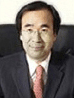
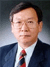
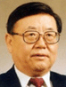
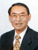
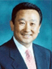
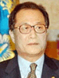
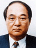

-
제 17대 임강택 원장
林崗澤Lim, Kang-Taeg
2019년 6월 13일 ~ 2020년 1월 17일
프로필 보기
제 16대 김연철 원장
金鍊鐵Kim, Yeon Chul
2018년 4월 12일 ~ 2019년 3월 8일
프로필 보기
-
제 15대 손기웅 원장
孫基雄Son, Gi Woong
2017년 3월 28일 ~ 2018년 1월 10일
프로필 보기
제 14대 최진욱 원장
崔鎭旭Choi,Jin-Wook
2014년 3월 28일 ~ 2017년 3월 27일
프로필 보기
-
제 13대 전성훈 원장
全星勳Cheon,Seong-Whun
2013년 8월 12일 ~ 2014년 3월 6일
프로필 보기
제 12대 김동성 원장
金東成Kim Dong Sung
2012년 12월 14일 ~ 2013년 2월 6일
프로필 보기
-
제 11대 김태우 원장
金泰宇Kim Tae Woo
2011년 8월 8일 ~ 2012년 10월 22일
프로필 보기

제 10대 서재진 원장
徐載鎭Suh Jae Jean
2008년 8월 8일 ~ 2011년 8월 7일
프로필 보기
-
제 9대 이봉조 원장
李鳳朝Lee Bong Jo
2007년 1월 18일 ~ 2008년 6월 5일
프로필 보기

제 8대 박영규 원장
朴英圭Park Young-Kyu
2004년 1월 18일 ~ 2007년 1월 17일
프로필 보기
-

제 7대 서병철 원장
徐丙喆Seo Byung-Chul
2001년 1월 18일 ~ 2004년 1월 17일
프로필 보기

제 6대 곽태환 원장
朴英圭Kwak Tae-Hwan
1999년 7월 6일 ~ 2000년 12월 16일
프로필 보기
-

제 5대 양영식 원장
梁榮植Yang Young-Shik
1998년 4월 16일 ~ 1999년 5월 25일
프로필 보기

제 3,4대 정세현 원장
丁世鉉Jeong Se Hyun
1996년 12월 18일 ~ 1998년 3월 9일
프로필 보기
-

제 1,2대 이병용 원장
李秉龍Lee Byoung-Yong
1991년 1월 3일 ~ 1996년 12월 18일
프로필 보기